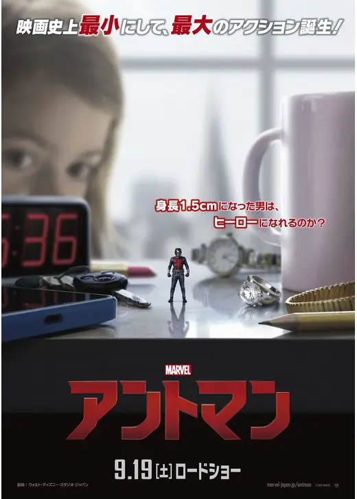
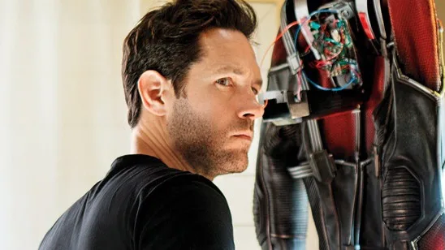
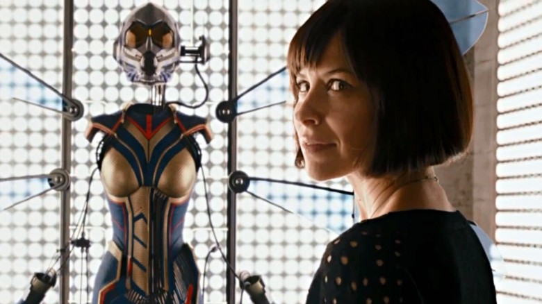
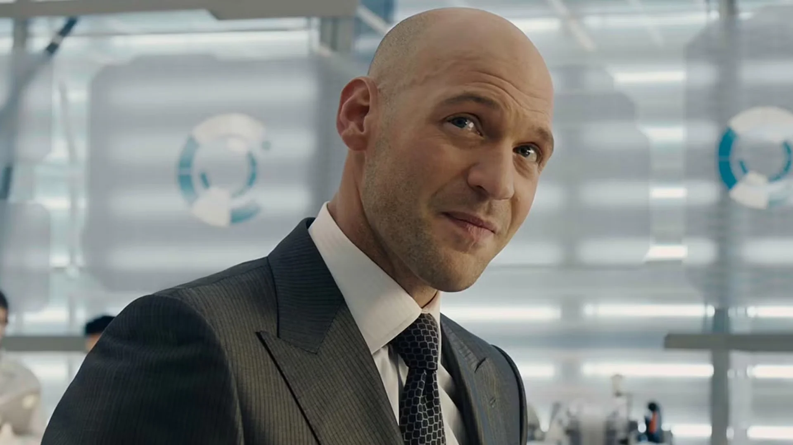

スコット・ラング / アントマン
元泥棒の不運な父親 // 2代目アントマン
鮮やかな手口を持つ元義賊のコソ泥。出所後、愛する娘キャシーの養育費のために挑んだ最後の空き巣で、ハンク・ピムの仕組んだ罠により「アントマン・スーツ」を盗み出す。
「一つだけ訊かせてくれ。……アベンジャーズを呼ぶのは遅すぎるか？」

ホープ・ヴァン・ダイン
ピム・テック取締役 // 優れた格闘術の指導者
ハンク・ピムの娘であり、ピム・テック社の高官。ダレンの暴走を止めるために父親と和解し、不慣れなスコットに対してアリの操り方や激しい格闘術を徹底的に叩き込む。自身がスーツを着て戦う能力があるにもかかわらず、娘を危険に晒したくない父の過保護さに反発していたが、最後に「ワスプ・スーツ」のプロトタイプを託される。
「パンチの打ち方を教えてあげる。」
ハンク・ピム博士 / 初代アントマン
ピム粒子の発見者 // 天才物理学者
原子の距離を縮めることで物質を縮小させる「ピム粒子」を開発した冷戦期のSSR天才科学者。その悪用を恐れて長年技術を封印し会社からも退いていたが、かつての弟子ダレンが軍事兵器としてピム粒子を再現したことを知り、すべてを盗み出して消し去るためにスコットを次世代のアントマンとしてスカウトする。
「スタークの奴らにこの技術を渡すわけにはいかん。」

ダレン・クロス / イエロージャケット
ピム・テック現CEO // 執念の科学者
かつてハンク・ピムの助手であり、実の息子のように彼を慕っていたが、ピム粒子を隠され続けたことで愛憎が爆発、ピムを会社から追放する。執念で縮小技術を再現し、最凶の軍事用暗殺スーツ「イエロージャケット」を完成。不完全な縮小実験の副作用により脳の化学バランスが崩れ、冷酷な狂気へと染まっていく。
「あなたは私を認めなかった……！このイエロージャケットの技術は世界を、戦争の歴史を塗り替えるのだ！」